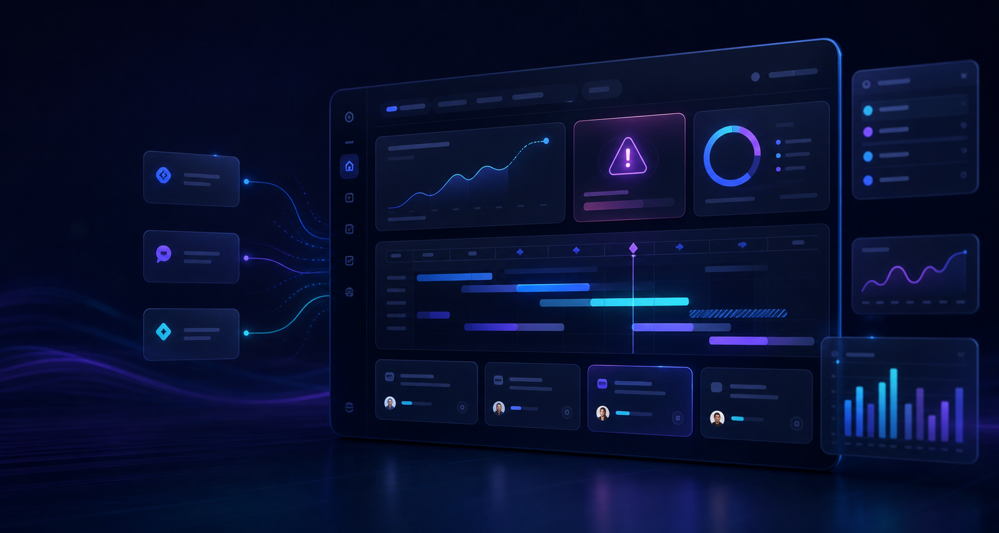

Target
想定読者
10〜50人規模スタートアップのCTO、PM、開発ディレクター。
Case Study / Startup SaaS
AI搭載の進捗可視化SaaSという架空設定です。新機能「AI遅延予測」を軸に、広告運用に耐える初版LPを1週間以内で出し、その後にA/Bテストを回しやすい構成として作っています。
ターゲットはCTO、PM、開発ディレクター。CVは14日無料トライアル。`hero_saas_dark`、`pain_points_cards`、`feature_highlights`、`pricing_toggle`、`cta_bottom_banner` を軸に、先進性と速さを両立させます。
本体LPへ戻るコピー候補、料金訴求、連携ロゴまわりの反復をローカルで回しつつ、run.json でJSトグルと表記整合を確認する想定です。
Target
10〜50人規模スタートアップのCTO、PM、開発ディレクター。
Need
AI遅延予測のPMFを素早く検証したいが、価値提案と見た目を急いで揃えたい。
CV Goal
14日間無料トライアル登録。クレジットカード不要。
Actual Generated Preview
GitHub / Slack / Jira と連携し、プロジェクトの遅延リスクを自動予測。朝会前に、どこが詰まりそうかを先回りで見える化します。
14日間無料で試す（カード登録不要）
過去のコミット履歴から完成日のズレを予測。
リスクが高いタスクを関係者へ自動通知。
GitHub / Slack / Jira を5分で接続開始。
$0 / mo
小規模検証向け$29 / mo
AI遅延予測とSlack通知を解放Custom
監査ログ・SSO対応アカウント作成から初回接続までを最短化。
コミット履歴とIssue進行を読み込みます。
遅延兆候と通知ルールを設定。
リスクの高いタスクを毎日先回りで確認。
10〜15人規模でも、依存関係の見えづらさを減らす価値がある前提で設計しています。
GitHub、Slack、Jiraをそのまま入口にし、会議時間の短縮へ寄せた訴求にしています。
Codex単体
Local AI Web Builder
このページは半実案件風の公開事例です。実在クライアント案件ではありません。